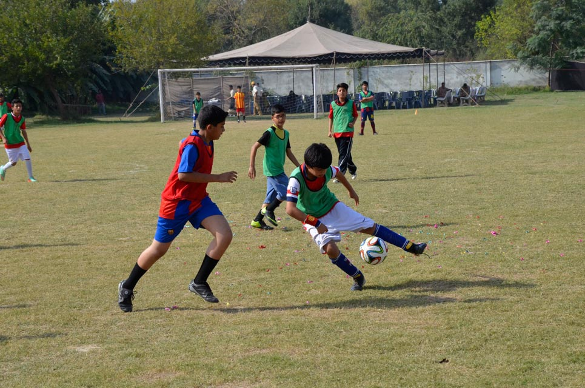

Teaching and Learning
The Science School has been established with the aim of providing an exciting and challenging education in the particular domain of science, mathematics and technology at school level.
Science learning in Pakistan has been dominated by a focus on the learning and memorization of facts. Students and schools share common ideas of science as an ancient body of factual knowledge acquired by scientists in the western world. This knowledge is seen as fixed, something that cannot be challenged, or will ever change. The teacher is expected to explain and the student is expected to learn this without asking questions. Assessment of science thus becomes a matter of testing how much is remembered. Often, it is only the student with the best memorization ability who ‘tops’ the class, every year and in every discipline. This result only demonstrates that the test assesses only the skill of memorisation and reproduction. True scientific activity requires far more.
 The Science School recognizes the growing, changing, nature of science. The Science School hopes to create an environment for science as active investigation and problem solving in the context of our own needs. We hope to develop sound concepts, build skills and move learning and teaching out of the lecture room to the laboratory and real life contexts where they belong. Mathematics learning is given great importance and efforts are made to integrate experiences of both science and mathematics wherever possible.
The Science School recognizes the growing, changing, nature of science. The Science School hopes to create an environment for science as active investigation and problem solving in the context of our own needs. We hope to develop sound concepts, build skills and move learning and teaching out of the lecture room to the laboratory and real life contexts where they belong. Mathematics learning is given great importance and efforts are made to integrate experiences of both science and mathematics wherever possible.
The Science School endeavors to embrace academic excellence through qualities such as intellectual curiosity, rigor, skepticism, courage, perseverance, compassion, honesty, respect for all and most importantly, through a sense of fun.
The Science School takes an integrated, holistic approach to the development of Pakistan’s young scientists. Our Curriculum seeks active inspiration, support and guidance from Pakistan’s Science, Engineering and Technology organizations. An example is the development of Learning Units in Geography by SUPARCO’s professionals using state of the art satellite imagery, and the support to development of Design and Technology curriculum through NESCOM.
 Design and Technology is taught from early years in schools around the world. It is a subject assessed by International General Certificate of Secondary Education UK (IGCSE) among others. The Science School has introduced Design and Technology in Pakistan as an essential area of study relating to our goal of developing young Scientists and Engineers. The IGCSE Syllabus encourages students to “identify, consider and solve problems through creative thinking, planning and design, and by working with different media, materials and tools.”
Design and Technology is taught from early years in schools around the world. It is a subject assessed by International General Certificate of Secondary Education UK (IGCSE) among others. The Science School has introduced Design and Technology in Pakistan as an essential area of study relating to our goal of developing young Scientists and Engineers. The IGCSE Syllabus encourages students to “identify, consider and solve problems through creative thinking, planning and design, and by working with different media, materials and tools.”
As the name suggests, Design and Technology, enables students to think creatively and critically, learn research skills, plan and conduct investigations in a range of different and interesting areas. Students will work through the cycle of creative thinking, analysis, and synthesis. They will work hands-on with materials, use technology and learn to communicate effectively.
Design itself is a complex activity. Concepts and principles of design are incorporated with a study of materials and technology as well as innovative ideas for the use of energy. Students in The Science School design tools and objects to meet a range of purposes and needs thus developing skills for a future in Engineering in Pakistan.
The School Library is a developing resource. Books as well as online materials are provided. We provide a wide rage of reading material in all subject areas to expand the scope of student experience. We encourage exploration into areas of interest to add breadth and depth in understanding. We believe in the importance of a love for books and hope to develop good reading habits in our children. We encourage, fiction as well as non-fiction reading. We provide a wide variety of literature to reach out to the child’s imagination.

The Science School has integrated sports and play with subject study, for example, Social Studies, Science and Mathematics to establish links between healthy living, well-being and role of sports and play. The School has on offer a range of sports activities for each student to identify at least one sport to suit them individually so that they acquire a lifelong enjoyment of physical activity and its link with their overall well being.
This domain will also focus on development of social skills and an active concern for safety and security.
The Science School offers exciting sports activities to help our young scientists unwind and relax as well as compete. Our extensive and beautiful sports fields that include space for Cricket, Cycling, Tennis, Basketball, Football, Hockey, Badminton, make every day sports in School possible and attractive. Indoor sports such as Table Tennis and Snooker have been included in our sports facilities as well. Our Time Table is planned to accommodate time for sports as well as study. We hope to encourage a balanced approach.
A recent Sports Gala held in The Science School Rawalpindi Campus displayed the sense of fun and feeling of community that sports activities can generate. Such activities shall continue to be a feature of The Science School life.


 In the context of The Science School, please note:
In the context of The Science School, please note:
- There are two School Terms. First, from August/ September through December. Second, from January through June.
- Specified class work, home work, course work, project work, and research work, will be assessed. Total marks will be cumulated to 50% for each term.
- Term Examination marks will also be cumulated to 50%. Each term total will be out of 100; 50% being contributed by the Term Examination.
- End-of-year reports will show the Second Term formative assessment, and Term Examination marks, along with total aggregate of both the Terms.
- Parents will be informed regularly about students’ performance through written reports, and parent-teacher meetings.
- Parents can also request the School to arrange for a meeting with their child’s teachers for a discussion about the child’s achievement in school.
- The purpose of assessment is not just to prove but to improve and therefore, The Science School will provide both students and their parents opportunity to reflect upon the work carried out and discuss options for further development.
- In keeping with the requirement of Pakistan’s Scientific Organizations for a dynamic, investigative and purpose led practice of Science to solve the critical problems and meet the challenge of the defence of Pakistan, The Science School plans to follow these routes:
- Prepare students for high standard of performance in O and A level and IGCSE examinations.
- Provide additional opportunities for examinations on subjects such as Design and Technology , Additional Mathematics, Geography and languages such as Arabic and Chinese.
- Provide tutorial support in School career counseling to choose subjects.
- Career counseling to choose subjects.
- Preparation for SAT and other National Tests.